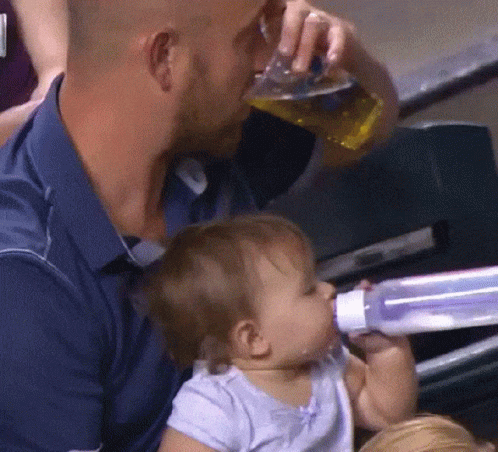

24.–26. dubna · Rokytno · Edukativně-terapeutický víkend pro nezletilé a jejich otce
do Apaluchy vol. 4

Klikni na kohokoliv.
Dodržování je povinné. Výjimky neexistují.
Co se stane na Apaluše, zůstane na Apaluše.
Každý dospělý nese výhradní zodpovědnost pouze za své děti.
Kdo neuklízí, nežere.
Kdo usne první, prohrál.
Ve vířivce je výhradní zákaz konzumace jídla a alkoholu a před prvním smočením je absolutně nezbytná očista těla ve sprše.
Rokytno 5, u Nového Města na Moravě
Jeden člověk, jeden hlas. Kdo maže cookies, maže demokracii.